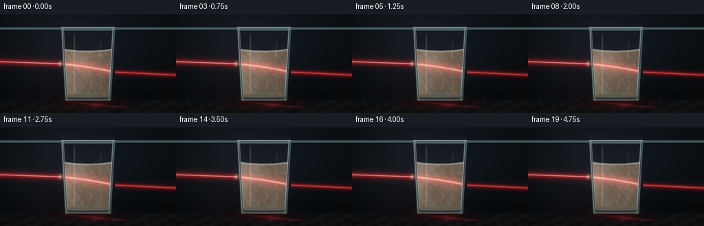
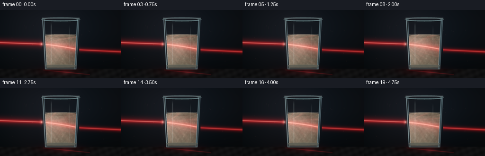
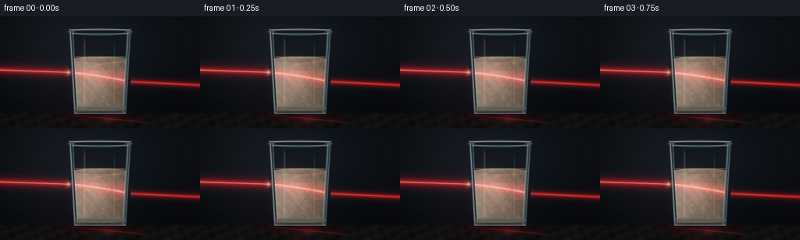
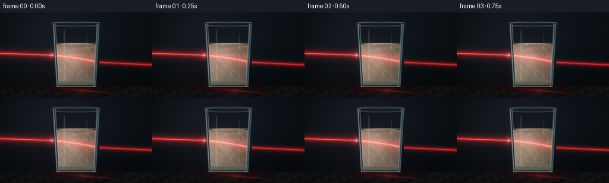
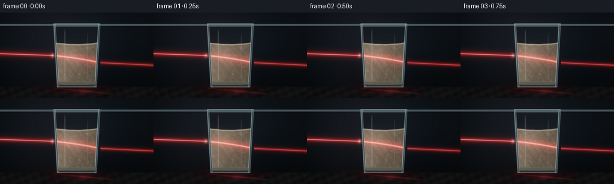
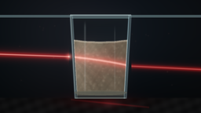
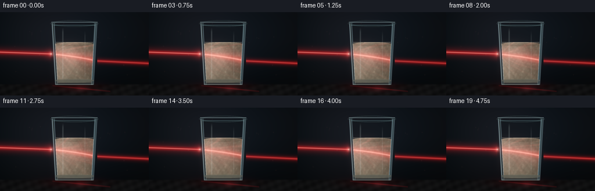
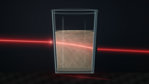

CODING AGENTS AS PIXEL WORLD MODELS
traex/DeepSeek-V4.1-Flash · phygen_046
点击播放 · 原生 RGB 像素
逐轮保存的候选
回放视频、检查图与代码变化。
每份候选均可单独播放。实际图片检查记录在下方工具轨迹中。
候选 01播放与检查图
点击播放 · 原生 RGB 像素

展开代码变化
--- 上一保存版本 +++ 本次保存版本 @@ -0,0 +1,319 @@ +from pathlib import Path + +import numpy as np +from PIL import Image, ImageFilter + +import artifact_io + + +OUT_W, OUT_H = 256, 144 +N_FRAMES = 20 +FPS = 4.0 +SS = 3 +W, H = OUT_W * SS, OUT_H * SS +RNG = np.random.default_rng(4604) + + +def smoothstep(edge0, edge1, value): + value = np.clip((value - edge0) / (edge1 - edge0), 0.0, 1.0) + return value * value * (3.0 - 2.0 * value) + + +def soft_ellipse(x, y, cx, cy, rx, ry, feather): + d = np.sqrt(((x - cx) / rx) ** 2 + ((y - cy) / ry) ** 2) + return 1.0 - smoothstep(1.0 - feather, 1.0 + feather, d) + + +def gaussian_blur(array, radius): + image = Image.fromarray(np.clip(array * 255.0, 0, 255).astype(np.uint8), "L") + image = image.filter(ImageFilter.GaussianBlur(radius)) + return np.asarray(image, dtype=np.float32) / 255.0 + + +def add_local_glow(canvas, px, py, radius, color, strength): + x0 = max(0, int(px - radius)) + x1 = min(W, int(px + radius + 2)) + y0 = max(0, int(py - radius)) + y1 = min(H, int(py + radius + 2)) + if x0 >= x1 or y0 >= y1: + return + yy, xx = np.mgrid[y0:y1, x0:x1] + sigma = max(0.8, radius * 0.38) + weight = np.exp(-((xx - px) ** 2 + (yy - py) ** 2) / (2.0 * sigma * sigma)) + canvas[y0:y1, x0:x1] += weight[..., None] * np.asarray(color) * strength + + +yy, xx = np.mgrid[0:H, 0:W].astype(np.float32) +x = xx / SS +y = yy / SS + +# Fixed fine particles suspended in the milk. +N_PARTICLES = 135 +particle_x = RNG.uniform(97.0, 158.0, N_PARTICLES) +particle_y = RNG.uniform(57.0, 116.0, N_PARTICLES) +particle_phase = RNG.uniform(0.0, 2.0 * np.pi, N_PARTICLES) +particle_size = RNG.uniform(1.3, 3.4, N_PARTICLES) +particle_power = RNG.uniform(0.25, 1.0, N_PARTICLES) + +# A few illuminated motes in the otherwise dark air. +AIR_PARTICLES = 22 +air_x = RNG.uniform(8.0, 248.0, AIR_PARTICLES) +air_y = RNG.uniform(12.0, 119.0, AIR_PARTICLES) +air_phase = RNG.uniform(0.0, 2.0 * np.pi, AIR_PARTICLES) + + +def glass_half_width(y_value): + return 38.5 - np.clip(y_value - 20.0, 0.0, 106.0) * 0.057 + + +def render_frame(frame_index): + t = frame_index / FPS + cx = 128.0 + + # Background: a quiet, cool studio with a faint pool of ambient light. + vertical = np.clip(y / (H / SS), 0.0, 1.0) + bg = np.empty((H, W, 3), dtype=np.float32) + bg[..., 0] = 0.017 + 0.026 * (1.0 - vertical) + 0.010 * np.sin(x * 0.026) + bg[..., 1] = 0.023 + 0.034 * (1.0 - vertical) + 0.008 * np.sin(x * 0.021 + 1.2) + bg[..., 2] = 0.031 + 0.048 * (1.0 - vertical) + 0.008 * np.cos(x * 0.018) + ambient = np.exp(-(((x - 116.0) / 96.0) ** 2 + ((y - 48.0) / 72.0) ** 2)) + bg += ambient[..., None] * np.array([0.028, 0.037, 0.046], dtype=np.float32) + vignette = np.clip(1.0 - 0.52 * (((x - cx) / 180.0) ** 2 + ((y - 70.0) / 120.0) ** 2), 0.42, 1.0) + bg *= vignette[..., None] + + # Table plane and soft contact shadow. + table_mask = smoothstep(123.0, 126.2, y) + table_tone = np.array([0.040, 0.041, 0.043], dtype=np.float32) + table_grain = ( + 0.008 * np.sin(x * 0.19 + y * 0.47) + + 0.005 * np.cos(x * 0.43 - y * 0.16) + + 0.004 * np.sin((x + y) * 0.075) + ) + table = table_tone + table_grain[..., None] + table *= (1.0 - 0.65 * np.exp(-(((x - cx) / 57.0) ** 2 + ((y - 127.0) / 5.0) ** 2)))[..., None] + img = bg * (1.0 - table_mask[..., None]) + table * table_mask[..., None] + + # Red light reflected by the tabletop beneath the tumbler. + table_glow = ( + np.exp(-(((x - 127.0) / 46.0) ** 2 + ((y - 129.0) / 8.5) ** 2)) + * (0.70 + 0.10 * np.sin(t * 1.1)) + ) + img += table_glow[..., None] * np.array([0.12, 0.012, 0.016], dtype=np.float32) + reflection_streak = np.exp(-((x - 139.0) / 10.0) ** 2) * np.exp(-((y - 131.0) / 5.0) ** 2) + img += reflection_streak[..., None] * np.array([0.12, 0.018, 0.022], dtype=np.float32) + + # Geometry for the tapered glass and its thick wall. + top_y = 19.0 + bottom_y = 125.5 + outer = glass_half_width(y) + inner = np.maximum(1.0, outer - 2.45) + dx = x - cx + in_vertical = (y >= top_y) & (y <= bottom_y) + outer_body = in_vertical & (np.abs(dx) <= outer) + inner_body = in_vertical & (np.abs(dx) <= inner) + wall = outer_body & ~inner_body + + # Glass body, with darker sides and a cool edge transmission. + side_light = np.clip((dx / outer) * 0.5 + 0.5, 0.0, 1.0) + glass_fill = np.zeros_like(img) + glass_fill += np.array([0.080, 0.110, 0.120], dtype=np.float32) + glass_fill *= (0.55 + 0.45 * side_light)[..., None] + glass_fill *= (0.78 + 0.22 * smoothstep(20.0, 60.0, y))[..., None] + img = np.where(inner_body[..., None], img * 0.78 + glass_fill * 0.30, img) + img = np.where(wall[..., None], glass_fill * 0.92 + img * 0.20, img) + + # The milk surface is a shallow, gently moving meniscus. + surface_y = 53.2 - 2.4 * np.clip((dx / inner) ** 2, 0.0, 1.0) + surface_y += 0.12 * np.sin(dx * 0.34 + t * 0.75) + milk = inner_body & (y >= surface_y) & (y <= bottom_y - 4.0) + milk_upper = inner_body & (y < surface_y) & (y > top_y + 3.0) + + # Cream body: warm base, side shading, and a broad forward-lit patch. + milk_norm_y = np.clip((y - 52.0) / 69.0, 0.0, 1.0) + milk_base = np.empty_like(img) + milk_base[..., 0] = 0.72 - 0.12 * milk_norm_y + milk_base[..., 1] = 0.655 - 0.13 * milk_norm_y + milk_base[..., 2] = 0.505 - 0.10 * milk_norm_y + milk_base *= (0.63 + 0.32 * (1.0 - side_light))[..., None] + + # Slow cream turbulence and fine suspended matter. + n1 = ( + np.sin(x * 0.090 + y * 0.045 + t * 0.54) + + 0.60 * np.cos(x * 0.155 - y * 0.083 - t * 0.38) + + 0.35 * np.sin(x * 0.310 + y * 0.217 + t * 0.73) + + 0.19 * np.cos(x * 0.690 - y * 0.510 - t * 0.61) + ) / 2.14 + n2 = ( + np.sin(x * 0.510 - y * 0.390 + t * 0.92) + + 0.55 * np.cos(x * 0.870 + y * 0.620 - t * 0.67) + + 0.30 * np.sin(x * 1.390 + y * 0.930 + t * 0.48) + ) / 1.85 + milk_base *= (0.91 + 0.12 * n1 + 0.055 * n2)[..., None] + img = np.where(milk[..., None], milk_base, img) + + # A pale top surface catches the ambient light. + surface_band = milk & (y < surface_y + 2.1) + img = np.where(surface_band[..., None], img * 0.72 + np.array([0.36, 0.34, 0.28]), img) + surface_line = np.exp(-((y - surface_y) / 0.68) ** 2) * inner_body + img += surface_line[..., None] * np.array([0.38, 0.35, 0.30], dtype=np.float32) + + # Internal caustic fan and curved filaments, concentrated near the beam. + rel_x = x - 89.0 + rel_y = y - 72.0 + angle = np.arctan2(rel_y - 0.11 * rel_x, np.maximum(rel_x, 1.0)) + fan_envelope = smoothstep(0.0, 18.0, rel_x) * np.exp(-np.maximum(rel_y, 0.0) / 29.0) + spokes = (0.5 + 0.5 * np.cos(angle * 21.0 + 2.3 * np.sin(y * 0.11 + t))) ** 5 + fine_spokes = (0.5 + 0.5 * np.cos(angle * 39.0 - 1.4 * t)) ** 11 + caustic = fan_envelope * (0.075 * spokes + 0.030 * fine_spokes) + caustic *= (0.78 + 0.30 * n1) + img += (caustic * milk)[..., None] * np.array([1.0, 0.31, 0.27], dtype=np.float32) + + filament_a = np.exp( + -((x - (121.0 + 23.0 * np.sin(y * 0.058 + 0.35 * t))) / 1.15) ** 2 + ) * np.exp(-((y - 84.0) / 32.0) ** 2) + filament_b = np.exp( + -((x - (145.0 + 11.0 * np.sin(y * 0.083 - 0.45 * t + 0.8))) / 0.85) ** 2 + ) * np.exp(-((y - 87.0) / 28.0) ** 2) + filament_c = np.exp( + -((x - (103.0 + 8.0 * np.cos(y * 0.097 + 0.27 * t))) / 0.72) ** 2 + ) * np.exp(-((y - 88.0) / 25.0) ** 2) + filaments = (0.040 * filament_a + 0.027 * filament_b + 0.022 * filament_c) * milk + img += filaments[..., None] * np.array([1.0, 0.47, 0.38], dtype=np.float32) + + # Laser trajectories: a narrow external ray, a refracted path in the milk, + # and a weaker continuation after leaving the right wall. + entry_x, entry_y = 88.0, 72.0 + exit_x = 167.0 + exit_y = 72.0 + 0.090 * (exit_x - entry_x) + 0.0008 * (exit_x - entry_x) ** 2 + + outside_left = x < entry_x + outside_right = x > exit_x + inside = (x >= entry_x) & (x <= exit_x) + external_y = entry_y + 0.035 * (x - entry_x) + internal_y = entry_y + 0.090 * (x - entry_x) + 0.0008 * (x - entry_x) ** 2 + outgoing_y = exit_y + 0.048 * (x - exit_x) + + d_left = np.abs(y - external_y) + d_inside = np.abs(y - internal_y) + d_right = np.abs(y - outgoing_y) + flicker = 0.97 + 0.03 * np.sin(t * 3.1) + 0.015 * np.sin(t * 7.7 + 0.4) + + beam_halo = ( + outside_left * np.exp(-(d_left / 7.0) ** 2) + + inside * milk * np.exp(-(d_inside / 10.5) ** 2) + + outside_right * np.exp(-(d_right / 5.0) ** 2) + ) * flicker + beam_mid = ( + outside_left * np.exp(-(d_left / 2.8) ** 2) + + inside * milk * np.exp(-(d_inside / 4.8) ** 2) + + outside_right * np.exp(-(d_right / 2.0) ** 2) + ) * flicker + beam_core = ( + outside_left * np.exp(-(d_left / 0.63) ** 2) + + inside * milk * np.exp(-(d_inside / 1.20) ** 2) + + outside_right * np.exp(-(d_right / 0.48) ** 2) * 0.42 + ) * flicker + img += beam_halo[..., None] * np.array([0.155, 0.006, 0.009], dtype=np.float32) + img += beam_mid[..., None] * np.array([0.68, 0.045, 0.040], dtype=np.float32) + img += beam_core[..., None] * np.array([1.15, 0.67, 0.60], dtype=np.float32) + + # The entry point blooms where the focused beam crosses the curved glass. + entry_glow = np.exp(-(((x - entry_x) / 3.4) ** 2 + ((y - entry_y) / 3.4) ** 2)) + img += entry_glow[..., None] * np.array([0.95, 0.32, 0.28], dtype=np.float32) * flicker + entry_star = np.exp(-(((x - entry_x) / 1.1) ** 2 + ((y - entry_y) / 1.1) ** 2)) + img += entry_star[..., None] * np.array([0.95, 0.80, 0.68], dtype=np.float32) + + # Secondary scattering gives the milk a soft rose-colored internal glow. + scatter = milk * np.exp(-(((x - 122.0) / 38.0) ** 2 + ((y - 79.0) / 27.0) ** 2)) + scatter *= 0.86 + 0.14 * np.sin(x * 0.16 + y * 0.09 - t * 0.6) + img += scatter[..., None] * np.array([0.115, 0.014, 0.013], dtype=np.float32) + + # Suspended milk particles. They drift slowly and glitter when near the beam. + for i in range(N_PARTICLES): + px = particle_x[i] + 0.85 * np.sin(t * 0.62 + particle_phase[i]) + px += 0.35 * np.sin(t * 1.17 + particle_phase[i] * 1.7) + py = particle_y[i] + 0.62 * np.cos(t * 0.47 + particle_phase[i]) + py += 0.22 * np.sin(t * 0.93 + particle_phase[i] * 0.8) + beam_distance = abs(py - (entry_y + 0.090 * (px - entry_x) + 0.0008 * (px - entry_x) ** 2)) + near_beam = np.exp(-(beam_distance / 10.0) ** 2) + color = np.array([0.54, 0.48, 0.38]) + near_beam * np.array([0.50, 0.11, 0.10]) + add_local_glow(img, px * SS, py * SS, particle_size[i] * SS, color, 0.16 * particle_power[i]) + + # Airborne dust makes the beam legible without overwhelming the still life. + for i in range(AIR_PARTICLES): + px = air_x[i] + 0.45 * np.sin(t * 0.35 + air_phase[i]) + py = air_y[i] + 0.30 * np.cos(t * 0.31 + air_phase[i] * 1.2) + distance = abs(py - (entry_y + 0.035 * (px - entry_x))) if px < entry_x else abs(py - internal_y[int(np.clip(py * SS, 0, H - 1)), int(np.clip(px * SS, 0, W - 1))]) + glow = np.exp(-(distance / 5.0) ** 2) + add_local_glow( + img, + px * SS, + py * SS, + 1.6 * SS, + np.array([0.64, 0.34, 0.28]), + 0.055 + 0.10 * glow, + ) + + # Thick glass edges and rim. + edge_distance = np.minimum(np.abs(np.abs(dx) - outer), np.abs(np.abs(dx) - inner)) + edge_line = np.exp(-(edge_distance / 0.78) ** 2) * in_vertical + img += edge_line[..., None] * np.array([0.27, 0.36, 0.39], dtype=np.float32) + left_edge = np.exp(-((dx + outer - 0.65) / 0.72) ** 2) * in_vertical + img += left_edge[..., None] * np.array([0.36, 0.43, 0.43], dtype=np.float32) + right_glint = np.exp(-((dx - outer + 2.2) / 0.70) ** 2) * in_vertical + img += right_glint[..., None] * np.array([0.22, 0.32, 0.35], dtype=np.float32) + + rim_band = in_vertical & (y >= top_y) & (y <= top_y + 3.1) + img = np.where(rim_band[..., None], img * 0.55 + np.array([0.26, 0.35, 0.37]), img) + rim_line = np.exp(-((y - top_y) / 0.72) ** 2) * (np.abs(dx) <= outer + 0.4) + img += rim_line[..., None] * np.array([0.58, 0.70, 0.71], dtype=np.float32) + rim_inner = np.exp(-((y - (top_y + 3.8)) / 0.62) ** 2) * (np.abs(dx) <= inner + 0.5) + img += rim_inner[..., None] * np.array([0.28, 0.40, 0.41], dtype=np.float32) + + # Vertical specular streaks on the front glass. + spec_x1 = 108.0 + 0.12 * np.sin(t * 0.4) + spec_x2 = 146.0 + 0.10 * np.cos(t * 0.36) + spec1 = np.exp(-((x - spec_x1) / 1.05) ** 2) * smoothstep(25.0, 36.0, y) * (1.0 - smoothstep(111.0, 121.0, y)) + spec2 = np.exp(-((x - spec_x2) / 0.75) ** 2) * smoothstep(30.0, 45.0, y) * (1.0 - smoothstep(106.0, 118.0, y)) + img += (0.20 * spec1 + 0.12 * spec2)[..., None] * np.array([0.72, 0.80, 0.79], dtype=np.float32) + + # Thick base: a pale transmitted crescent plus a hard lower glint. + base_band = outer_body & (y >= 116.5) & (y <= bottom_y) + img = np.where(base_band[..., None], img * 0.42 + np.array([0.12, 0.14, 0.14]), img) + base_curve = soft_ellipse(x, y, cx, 118.0, outer - 2.2, 3.1, 0.10) * (y >= 115.0) + img = np.where(base_curve[..., None], img * 0.55 + np.array([0.22, 0.22, 0.18]), img) + bottom_line = np.exp(-((y - (bottom_y - 0.7)) / 0.66) ** 2) * (np.abs(dx) <= outer - 0.5) + img += bottom_line[..., None] * np.array([0.33, 0.37, 0.35], dtype=np.float32) + + # A subtle glass reflection of the beam on the tabletop. + reflection_beam = ( + np.exp(-((y - (129.0 + 0.10 * (x - 113.0))) / 1.1) ** 2) + * (x > 90.0) + * (x < 190.0) + * (0.35 + 0.65 * np.exp(-((x - 145.0) / 34.0) ** 2)) + ) + img += reflection_beam[..., None] * np.array([0.22, 0.022, 0.027], dtype=np.float32) + + # Mild bloom, then a filmic shoulder. Bloom is strongest around the laser. + luminance = img.mean(axis=2) + bloom_source = np.clip((luminance - 0.50) * 1.9, 0.0, 1.0) + bloom = gaussian_blur(bloom_source, 6.5 * SS) + img += bloom[..., None] * np.array([0.24, 0.17, 0.16], dtype=np.float32) + img = np.clip(img, 0.0, None) + img = img / (1.0 + 0.68 * img) + img = np.power(np.clip(img, 0.0, 1.0), 0.88) + + # Downsample with a good reconstruction filter. + small = Image.fromarray((np.clip(img, 0.0, 1.0) * 255.0 + 0.5).astype(np.uint8), "RGB") + small = small.resize((OUT_W, OUT_H), Image.Resampling.LANCZOS) + return np.asarray(small, dtype=np.uint8) + + +def main(): + case_dir = Path(__file__).resolve().parent + frames = np.stack([render_frame(i) for i in range(N_FRAMES)], axis=0) + artifact_io.save(frames, case_dir) + + +if __name__ == "__main__": + main()
候选 02播放与检查图
点击播放 · 原生 RGB 像素


展开代码变化
--- 上一保存版本
+++ 本次保存版本
@@ -14,6 +14,26 @@
RNG = np.random.default_rng(4604)
+def make_wave_bank(seed, count, freq_min, freq_max):
+ rng = np.random.default_rng(seed)
+ angles = rng.uniform(0.0, 2.0 * np.pi, count)
+ frequencies = rng.uniform(freq_min, freq_max, count)
+ phases = rng.uniform(0.0, 2.0 * np.pi, count)
+ amplitudes = rng.uniform(0.55, 1.0, count)
+ speeds = rng.uniform(-0.45, 0.45, count)
+ return (
+ np.cos(angles) * frequencies,
+ np.sin(angles) * frequencies,
+ phases,
+ amplitudes,
+ speeds,
+ )
+
+
+WAVES_A = make_wave_bank(761, 11, 0.035, 0.175)
+WAVES_B = make_wave_bank(762, 13, 0.055, 0.340)
+
+
def smoothstep(edge0, edge1, value):
value = np.clip((value - edge0) / (edge1 - edge0), 0.0, 1.0)
return value * value * (3.0 - 2.0 * value)
@@ -25,7 +45,7 @@
def gaussian_blur(array, radius):
- image = Image.fromarray(np.clip(array * 255.0, 0, 255).astype(np.uint8), "L")
+ image = Image.fromarray(np.clip(array * 255.0, 0, 255).astype(np.uint8))
image = image.filter(ImageFilter.GaussianBlur(radius))
return np.asarray(image, dtype=np.float32) / 255.0
@@ -43,6 +63,16 @@
canvas[y0:y1, x0:x1] += weight[..., None] * np.asarray(color) * strength
+def wave_field(bank, t):
+ kx, ky, phases, amplitudes, speeds = bank
+ field = np.zeros((H, W), dtype=np.float32)
+ for j in range(len(kx)):
+ field += amplitudes[j] * np.sin(kx[j] * x + ky[j] * y + speeds[j] * t + phases[j])
+ field -= field.min()
+ field /= max(float(field.max()), 1e-6)
+ return field
+
+
yy, xx = np.mgrid[0:H, 0:W].astype(np.float32)
x = xx / SS
y = yy / SS
@@ -106,12 +136,15 @@
top_y = 19.0
bottom_y = 125.5
outer = glass_half_width(y)
- inner = np.maximum(1.0, outer - 2.45)
+ inner = np.maximum(1.0, outer - 3.35)
dx = x - cx
in_vertical = (y >= top_y) & (y <= bottom_y)
outer_body = in_vertical & (np.abs(dx) <= outer)
inner_body = in_vertical & (np.abs(dx) <= inner)
wall = outer_body & ~inner_body
+ rim_outer = soft_ellipse(x, y, cx, top_y + 0.8, outer_at_top := 39.5, 4.6, 0.08)
+ rim_inner = soft_ellipse(x, y, cx, top_y + 0.8, inner_at_top := 35.7, 3.2, 0.09)
+ rim_ring = rim_outer * (1.0 - rim_inner)
# Glass body, with darker sides and a cool edge transmission.
side_light = np.clip((dx / outer) * 0.5 + 0.5, 0.0, 1.0)
@@ -119,22 +152,26 @@
glass_fill += np.array([0.080, 0.110, 0.120], dtype=np.float32)
glass_fill *= (0.55 + 0.45 * side_light)[..., None]
glass_fill *= (0.78 + 0.22 * smoothstep(20.0, 60.0, y))[..., None]
- img = np.where(inner_body[..., None], img * 0.78 + glass_fill * 0.30, img)
- img = np.where(wall[..., None], glass_fill * 0.92 + img * 0.20, img)
-
- # The milk surface is a shallow, gently moving meniscus.
- surface_y = 53.2 - 2.4 * np.clip((dx / inner) ** 2, 0.0, 1.0)
- surface_y += 0.12 * np.sin(dx * 0.34 + t * 0.75)
- milk = inner_body & (y >= surface_y) & (y <= bottom_y - 4.0)
- milk_upper = inner_body & (y < surface_y) & (y > top_y + 3.0)
+ img = np.where(inner_body[..., None], img * 0.82 + glass_fill * 0.14, img)
+ img = np.where(wall[..., None], glass_fill * 0.72 + img * 0.28, img)
+
+ # The milk surface is a shallow, gently moving elliptical meniscus.
+ surface_center = 55.2 + 0.10 * np.sin(t * 0.55)
+ surface_ry = 3.35 + 0.05 * np.sin(t * 0.71)
+ surface_ellipse = soft_ellipse(x, y, cx, surface_center, inner - 0.4, surface_ry, 0.07)
+ milk = inner_body & ((y >= surface_center) | (surface_ellipse > 0.06))
+ milk &= y <= bottom_y - 3.4
+ surface_norm = np.clip((y - (surface_center - surface_ry)) / (2.0 * surface_ry), 0.0, 1.0)
# Cream body: warm base, side shading, and a broad forward-lit patch.
milk_norm_y = np.clip((y - 52.0) / 69.0, 0.0, 1.0)
milk_base = np.empty_like(img)
- milk_base[..., 0] = 0.72 - 0.12 * milk_norm_y
- milk_base[..., 1] = 0.655 - 0.13 * milk_norm_y
- milk_base[..., 2] = 0.505 - 0.10 * milk_norm_y
- milk_base *= (0.63 + 0.32 * (1.0 - side_light))[..., None]
+ milk_base[..., 0] = 0.79 - 0.13 * milk_norm_y
+ milk_base[..., 1] = 0.72 - 0.14 * milk_norm_y
+ milk_base[..., 2] = 0.565 - 0.115 * milk_norm_y
+ milk_base *= (0.58 + 0.40 * (1.0 - side_light))[..., None]
+ forward_light = np.exp(-(((x - 126.0) / 26.0) ** 2 + ((y - 93.0) / 38.0) ** 2))
+ milk_base += forward_light[..., None] * np.array([0.105, 0.095, 0.072], dtype=np.float32)
# Slow cream turbulence and fine suspended matter.
n1 = (
@@ -149,13 +186,21 @@
+ 0.30 * np.sin(x * 1.390 + y * 0.930 + t * 0.48)
) / 1.85
milk_base *= (0.91 + 0.12 * n1 + 0.055 * n2)[..., None]
+ cloud_a = wave_field(WAVES_A, t)
+ cloud_b = wave_field(WAVES_B, t)
+ milk_base *= (0.91 + 0.13 * cloud_a + 0.045 * cloud_b)[..., None]
img = np.where(milk[..., None], milk_base, img)
- # A pale top surface catches the ambient light.
- surface_band = milk & (y < surface_y + 2.1)
- img = np.where(surface_band[..., None], img * 0.72 + np.array([0.36, 0.34, 0.28]), img)
- surface_line = np.exp(-((y - surface_y) / 0.68) ** 2) * inner_body
- img += surface_line[..., None] * np.array([0.38, 0.35, 0.30], dtype=np.float32)
+ # A pale elliptical surface catches the ambient light.
+ surface_shade = 0.67 + 0.30 * (1.0 - surface_norm)
+ img = np.where(
+ surface_ellipse[..., None] > 0.06,
+ img * surface_shade[..., None] + np.array([0.075, 0.065, 0.048], dtype=np.float32),
+ img,
+ )
+ back_surface_line = np.exp(-((y - (surface_center - surface_ry + 0.25)) / 0.65) ** 2)
+ back_surface_line *= (np.abs(dx) <= inner - 1.0)
+ img += back_surface_line[..., None] * np.array([0.36, 0.32, 0.26], dtype=np.float32)
# Internal caustic fan and curved filaments, concentrated near the beam.
rel_x = x - 89.0
@@ -164,9 +209,18 @@
fan_envelope = smoothstep(0.0, 18.0, rel_x) * np.exp(-np.maximum(rel_y, 0.0) / 29.0)
spokes = (0.5 + 0.5 * np.cos(angle * 21.0 + 2.3 * np.sin(y * 0.11 + t))) ** 5
fine_spokes = (0.5 + 0.5 * np.cos(angle * 39.0 - 1.4 * t)) ** 11
- caustic = fan_envelope * (0.075 * spokes + 0.030 * fine_spokes)
- caustic *= (0.78 + 0.30 * n1)
- img += (caustic * milk)[..., None] * np.array([1.0, 0.31, 0.27], dtype=np.float32)
+ caustic = fan_envelope * (0.20 * spokes + 0.075 * fine_spokes)
+ caustic *= (0.72 + 0.34 * n1 + 0.16 * cloud_a)
+ img += (caustic * milk)[..., None] * np.array([1.0, 0.28, 0.23], dtype=np.float32)
+
+ ring_radius = np.sqrt(((x - 97.0) / 24.0) ** 2 + ((y - 72.0) / 17.0) ** 2)
+ caustic_rings = np.zeros_like(x)
+ for ring_index in range(4):
+ ring = 1.35 + ring_index * 0.46 + 0.025 * np.sin(t * 0.65 + ring_index)
+ caustic_rings += np.exp(-((ring_radius - ring) / 0.055) ** 2) * (0.085 - ring_index * 0.012)
+ caustic_rings *= smoothstep(0.0, 0.5, rel_x) * np.exp(-np.maximum(rel_y, 0.0) / 33.0)
+ caustic_rings *= (0.68 + 0.40 * spokes)
+ img += (caustic_rings * milk)[..., None] * np.array([1.0, 0.37, 0.30], dtype=np.float32)
filament_a = np.exp(
-((x - (121.0 + 23.0 * np.sin(y * 0.058 + 0.35 * t))) / 1.15) ** 2
@@ -199,8 +253,8 @@
flicker = 0.97 + 0.03 * np.sin(t * 3.1) + 0.015 * np.sin(t * 7.7 + 0.4)
beam_halo = (
- outside_left * np.exp(-(d_left / 7.0) ** 2)
- + inside * milk * np.exp(-(d_inside / 10.5) ** 2)
+ outside_left * np.exp(-(d_left / 8.0) ** 2)
+ + inside * milk * np.exp(-(d_inside / 12.5) ** 2)
+ outside_right * np.exp(-(d_right / 5.0) ** 2)
) * flicker
beam_mid = (
@@ -213,9 +267,9 @@
+ inside * milk * np.exp(-(d_inside / 1.20) ** 2)
+ outside_right * np.exp(-(d_right / 0.48) ** 2) * 0.42
) * flicker
- img += beam_halo[..., None] * np.array([0.155, 0.006, 0.009], dtype=np.float32)
- img += beam_mid[..., None] * np.array([0.68, 0.045, 0.040], dtype=np.float32)
- img += beam_core[..., None] * np.array([1.15, 0.67, 0.60], dtype=np.float32)
+ img += beam_halo[..., None] * np.array([0.24, 0.008, 0.012], dtype=np.float32)
+ img += beam_mid[..., None] * np.array([0.76, 0.038, 0.035], dtype=np.float32)
+ img += beam_core[..., None] * np.array([1.12, 0.48, 0.40], dtype=np.float32)
# The entry point blooms where the focused beam crosses the curved glass.
entry_glow = np.exp(-(((x - entry_x) / 3.4) ** 2 + ((y - entry_y) / 3.4) ** 2))
@@ -225,8 +279,8 @@
# Secondary scattering gives the milk a soft rose-colored internal glow.
scatter = milk * np.exp(-(((x - 122.0) / 38.0) ** 2 + ((y - 79.0) / 27.0) ** 2))
- scatter *= 0.86 + 0.14 * np.sin(x * 0.16 + y * 0.09 - t * 0.6)
- img += scatter[..., None] * np.array([0.115, 0.014, 0.013], dtype=np.float32)
+ scatter *= 0.80 + 0.15 * np.sin(x * 0.16 + y * 0.09 - t * 0.6) + 0.12 * cloud_b
+ img += scatter[..., None] * np.array([0.185, 0.018, 0.017], dtype=np.float32)
# Suspended milk particles. They drift slowly and glitter when near the beam.
for i in range(N_PARTICLES):
@@ -263,12 +317,13 @@
right_glint = np.exp(-((dx - outer + 2.2) / 0.70) ** 2) * in_vertical
img += right_glint[..., None] * np.array([0.22, 0.32, 0.35], dtype=np.float32)
- rim_band = in_vertical & (y >= top_y) & (y <= top_y + 3.1)
- img = np.where(rim_band[..., None], img * 0.55 + np.array([0.26, 0.35, 0.37]), img)
- rim_line = np.exp(-((y - top_y) / 0.72) ** 2) * (np.abs(dx) <= outer + 0.4)
- img += rim_line[..., None] * np.array([0.58, 0.70, 0.71], dtype=np.float32)
- rim_inner = np.exp(-((y - (top_y + 3.8)) / 0.62) ** 2) * (np.abs(dx) <= inner + 0.5)
- img += rim_inner[..., None] * np.array([0.28, 0.40, 0.41], dtype=np.float32)
+ img = np.where(rim_ring[..., None] > 0.05, img * 0.48 + np.array([0.16, 0.22, 0.23]), img)
+ rim_upper = np.exp(-((y - (top_y - 1.8)) / 0.62) ** 2)
+ rim_upper *= (np.abs(dx) <= outer_at_top + 0.4) & (y < top_y + 1.0)
+ img += rim_upper[..., None] * np.array([0.64, 0.76, 0.76], dtype=np.float32)
+ rim_lower = np.exp(-((y - (top_y + 3.4)) / 0.55) ** 2)
+ rim_lower *= (np.abs(dx) <= inner_at_top + 0.3)
+ img += rim_lower[..., None] * np.array([0.30, 0.43, 0.44], dtype=np.float32)
# Vertical specular streaks on the front glass.
spec_x1 = 108.0 + 0.12 * np.sin(t * 0.4)
@@ -304,7 +359,7 @@
img = np.power(np.clip(img, 0.0, 1.0), 0.88)
# Downsample with a good reconstruction filter.
- small = Image.fromarray((np.clip(img, 0.0, 1.0) * 255.0 + 0.5).astype(np.uint8), "RGB")
+ small = Image.fromarray((np.clip(img, 0.0, 1.0) * 255.0 + 0.5).astype(np.uint8))
small = small.resize((OUT_W, OUT_H), Image.Resampling.LANCZOS)
return np.asarray(small, dtype=np.uint8)
候选 03播放与检查图
点击播放 · 原生 RGB 像素


展开代码变化
--- 上一保存版本
+++ 本次保存版本
@@ -142,8 +142,8 @@
outer_body = in_vertical & (np.abs(dx) <= outer)
inner_body = in_vertical & (np.abs(dx) <= inner)
wall = outer_body & ~inner_body
- rim_outer = soft_ellipse(x, y, cx, top_y + 0.8, outer_at_top := 39.5, 4.6, 0.08)
- rim_inner = soft_ellipse(x, y, cx, top_y + 0.8, inner_at_top := 35.7, 3.2, 0.09)
+ rim_outer = soft_ellipse(x, y, cx, top_y + 0.5, outer_at_top := 39.5, 5.8, 0.08)
+ rim_inner = soft_ellipse(x, y, cx, top_y + 0.5, inner_at_top := 35.7, 4.6, 0.09)
rim_ring = rim_outer * (1.0 - rim_inner)
# Glass body, with darker sides and a cool edge transmission.
@@ -274,6 +274,8 @@
# The entry point blooms where the focused beam crosses the curved glass.
entry_glow = np.exp(-(((x - entry_x) / 3.4) ** 2 + ((y - entry_y) / 3.4) ** 2))
img += entry_glow[..., None] * np.array([0.95, 0.32, 0.28], dtype=np.float32) * flicker
+ entry_halo = np.exp(-(((x - entry_x) / 10.0) ** 2 + ((y - entry_y) / 8.0) ** 2))
+ img += entry_halo[..., None] * np.array([0.26, 0.025, 0.024], dtype=np.float32)
entry_star = np.exp(-(((x - entry_x) / 1.1) ** 2 + ((y - entry_y) / 1.1) ** 2))
img += entry_star[..., None] * np.array([0.95, 0.80, 0.68], dtype=np.float32)
@@ -317,13 +319,13 @@
right_glint = np.exp(-((dx - outer + 2.2) / 0.70) ** 2) * in_vertical
img += right_glint[..., None] * np.array([0.22, 0.32, 0.35], dtype=np.float32)
- img = np.where(rim_ring[..., None] > 0.05, img * 0.48 + np.array([0.16, 0.22, 0.23]), img)
- rim_upper = np.exp(-((y - (top_y - 1.8)) / 0.62) ** 2)
+ img = np.where(rim_ring[..., None] > 0.05, img * 0.72 + np.array([0.055, 0.078, 0.082]), img)
+ rim_upper = np.exp(-((y - (top_y - 1.8)) / 0.54) ** 2)
rim_upper *= (np.abs(dx) <= outer_at_top + 0.4) & (y < top_y + 1.0)
- img += rim_upper[..., None] * np.array([0.64, 0.76, 0.76], dtype=np.float32)
+ img += rim_upper[..., None] * np.array([0.43, 0.54, 0.55], dtype=np.float32)
rim_lower = np.exp(-((y - (top_y + 3.4)) / 0.55) ** 2)
rim_lower *= (np.abs(dx) <= inner_at_top + 0.3)
- img += rim_lower[..., None] * np.array([0.30, 0.43, 0.44], dtype=np.float32)
+ img += rim_lower[..., None] * np.array([0.18, 0.27, 0.28], dtype=np.float32)
# Vertical specular streaks on the front glass.
spec_x1 = 108.0 + 0.12 * np.sin(t * 0.4)
可观测工具轨迹
实际执行的命令与返回图片。
命令 1exit 0
/bin/bash -c "pwd && rg --files -g 'prompt.txt' -g 'GENERATION_RULES.md' -g 'task_spec.json' -g '"'!**/.git/**'"'"
命令 2exit 0
/bin/bash -c 'ls -la'
命令 3exit 0
/bin/bash -c 'cat GENERATION_RULES.md'
命令 4exit 0
/bin/bash -c 'cat prompt.txt'
命令 5exit 0
/bin/bash -c 'cat task_spec.json'
命令 6exit 0
/bin/bash -c "sed -n '1,240p' artifact_io.py && printf '\\n--- player ---\\n' && sed -n '1,260p' player_template.html"
命令 7exit 0
/bin/bash -c "python - <<'PY'
import sys, numpy, PIL
print(sys.version)
print('numpy', numpy.__version__)
print('PIL', PIL.__version__)
PY"命令 8exit 0
/bin/bash -c 'python generate.py'
命令 9exit 0
/bin/bash -c 'python generate.py'
命令 10exit 0
/bin/bash -c 'python generate.py'
命令 11exit 0
/bin/bash -c "python - <<'PY'
from pathlib import Path
import numpy as np
from PIL import Image
p=Path('.')
files=['pixels.npz','inspection.png','transition_check.png','index.html','generate.py']
print({f:(p/f).exists() for f in files})
z=np.load(p/'pixels.npz')['pixels']
print('packed tensor', z.shape, z.dtype)
print('frame png count', len(list((p/'frames').glob('*.png'))))
im=Image.open(p/'frames'/'00.png')
print('frame size/mode', im.size, im.mode)
a=np.stack([np.asarray(Image.open(p/'frames'/f'{i:02d}.png')) for i in range(20)])
print('decoded', a.shape, a.dtype, 'min/max', int(a.min()), int(a.max()))
print('adjacent mean abs diff', float(np.abs(a[1:].astype(np.int16)-a[:-1].astype(np.int16)).mean()))
print('first/last mean abs diff', float(np.abs(a[-1].astype(np.int16)-a[0].astype(np.int16)).mean()))
print('index bytes', (p/'index.html').stat().st_size)
PY"命令 12exit 0
/bin/bash -c 'python -m py_compile generate.py artifact_io.py && du -h pixels.npz index.html frames/00.png'
视觉工具实际返回图片 1

视觉工具实际返回图片 2

视觉工具实际返回图片 3

视觉工具实际返回图片 4

视觉工具实际返回图片 5

视觉工具实际返回图片 6

保存候选 3 份；完成命令 12 次；可验证图片返回 6 张。原始 API 响应与完整日志保留在本地。